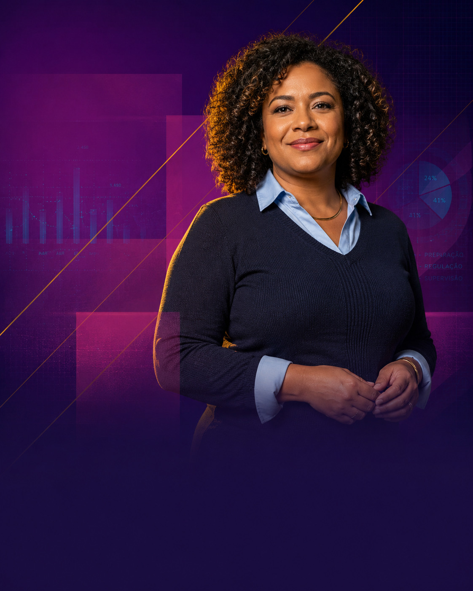

A NR-1 passou a exigir que organizações identifiquem, avaliem, classifiquem, controlem e documentem os fatores de risco psicossociais relacionados ao trabalho. Empresas, prefeituras, órgãos públicos e instituições precisam se preparar com diagnóstico, plano de ação, desenvolvimento de lideranças e evidências.

Diagnóstico, plano de ação, desenvolvimento e evidências em um único processo organizado.
A organização precisa incluir os fatores psicossociais no gerenciamento de riscos ocupacionais, com registro, plano de ação e acompanhamento.
Fatores psicossociais relacionados ao trabalho em cada área, setor, função ou grupo.
Quais áreas, setores, funções ou grupos estão mais expostos aos riscos identificados.
Os riscos por prioridade, considerando impacto e probabilidade de ocorrência.
Os riscos no processo de gestão ocupacional da organização, com documentação formal.
Criar plano de ação com responsáveis, prazos e medidas preventivas claras.
Execução das ações e gerar evidências para RH, gestão, SST, direção e órgãos de controle.
O tema também alcança organizações públicas e instituições que possuem trabalhadores, equipes contratadas, terceirizadas ou ambientes de trabalho sob sua responsabilidade.
Os riscos psicossociais estão ligados à forma como o trabalho é planejado, distribuído, cobrado, liderado e vivenciado pelas equipes.
A falta de gestão dos riscos psicossociais pode gerar autuações, multas, fragilidade jurídica, afastamentos, denúncias, conflitos e desgaste institucional.
A CKM oferece uma solução integrada com diagnóstico, plano de ação, desenvolvimento de competências socioemocionais, mentorias, acompanhamento e evidências.
Mapeamos os fatores psicossociais relacionados ao trabalho por área, setor, secretaria, unidade ou grupo.
Transformamos os achados em ações claras, com prioridade, responsável, prazo, indicador e evidência esperada.
Conectamos os riscos identificados às competências que precisam ser fortalecidas em lideranças e equipes.
Acompanhamos execução das ações, mentorias, registros e evolução dos indicadores, gerando relatórios para a gestão.
A organização recebe diagnóstico, mapa de riscos, plano de ação, desenvolvimento de lideranças, mentorias e relatórios — tudo organizado e rastreável.
Muitos riscos psicossociais estão ligados à forma como as equipes são conduzidas. O BEM NR-1 conecta cada risco identificado a uma competência específica a ser desenvolvida.
| Risco identificado | Competência a desenvolver |
|---|---|
| Falta de apoio da liderança | Escuta, orientação e feedback |
| Conflitos recorrentes | Comunicação e gestão de conflitos |
| Sobrecarga | Priorização e organização |
| Baixa segurança psicológica | Confiança, respeito e diálogo |
| Mudanças mal conduzidas | Comunicação e adaptação |
| Condutas inadequadas | Ética e responsabilidade nas relações |
Sua organização pode começar pelo diagnóstico e evoluir para desenvolvimento, mentorias, plataforma e acompanhamento contínuo.
Para organizações que querem começar agora.
Para organizar risco e ação.
Para preparar lideranças, chefias e gestores.
Solução integrada de ponta a ponta.
O BEM NR-1 pode ser implantado em um ciclo inicial de 90 dias, com etapas claras e entregas objetivas — adaptável para empresas privadas, prefeituras, órgãos públicos, autarquias, fundações e demais instituições.
| Fase | O que acontece |
|---|---|
| Semana 1 | Alinhamento com gestão de pessoas, SST e alta administração |
| Semanas 2 e 3 | Aplicação do diagnóstico psicossocial |
| Semana 4 | Análise dos resultados |
| Semana 5 | Devolutiva e construção do plano de ação |
| Semanas 6 a 11 | Desenvolvimento de competências, mentorias e acompanhamento |
| Semana 12 | Relatório final e recomendações para o próximo ciclo |
O BEM NR-1 separa dados coletivos de risco, dados individuais de desenvolvimento, registros de mentoria e evidências organizacionais. A organização não expõe respostas individuais dos trabalhadores.
Identificar, avaliar, classificar, agir, acompanhar e documentar. Com método, simplicidade e acompanhamento, sua organização sai da dúvida e dá os primeiros passos com segurança.
relacionamento@ckmtalents.net · Dina Makiyama · ECO do B.E.M. / CKM Talents